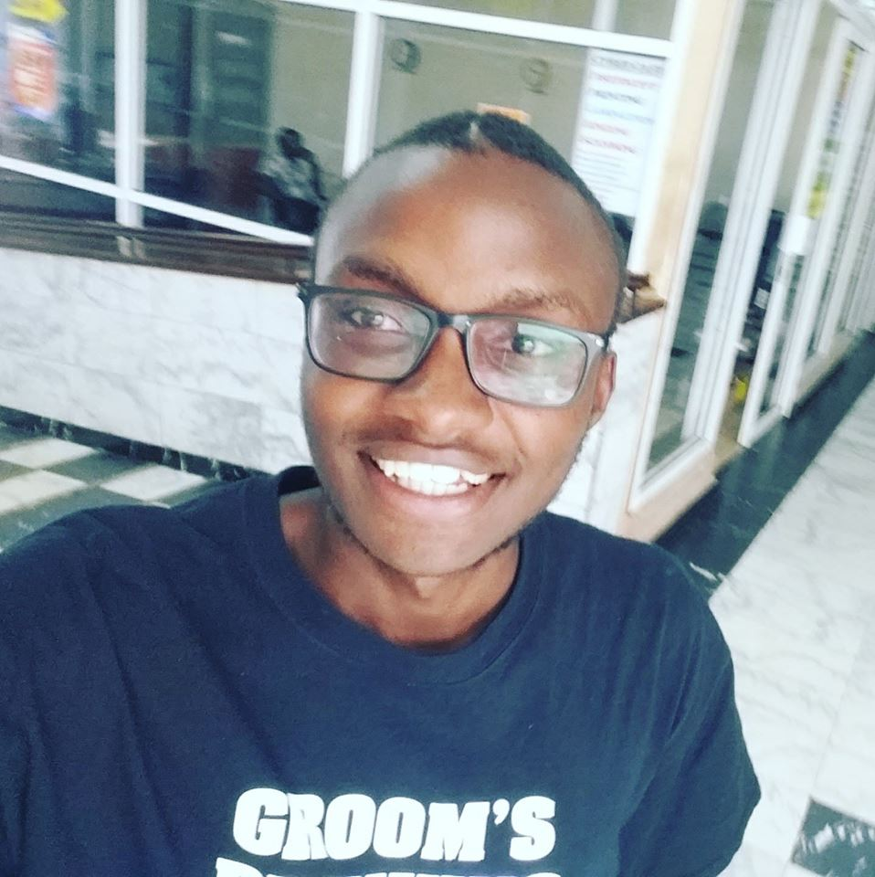

Welcome to infinity
There are several 'autobiographies' about me but this will clearly explain what's true and whats not'
Wondering how I look like?
Rare photo of Perry
Please check out my contact page to check out my details.
Feel free to scroll into my contact page for more information on how you can contact me.
The world is slowly evolving, it moves from traditional means to modern methods.This also means that techniques are
also changing from physical to more automated methods.This means that there is need for designers of algorithims that will guide the automated processes
I joined Moringa school to be equipped with necessary Skills to be able to find solutions to modern day problems
as well as write algorithims that modify existing systems 20 weeks of intensive learning will be the stepping stone
to a better society
These are some of my social media handles